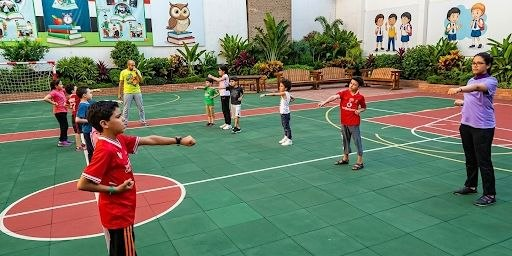
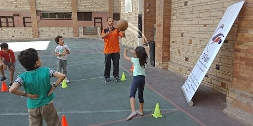
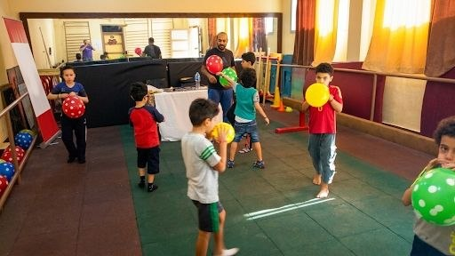
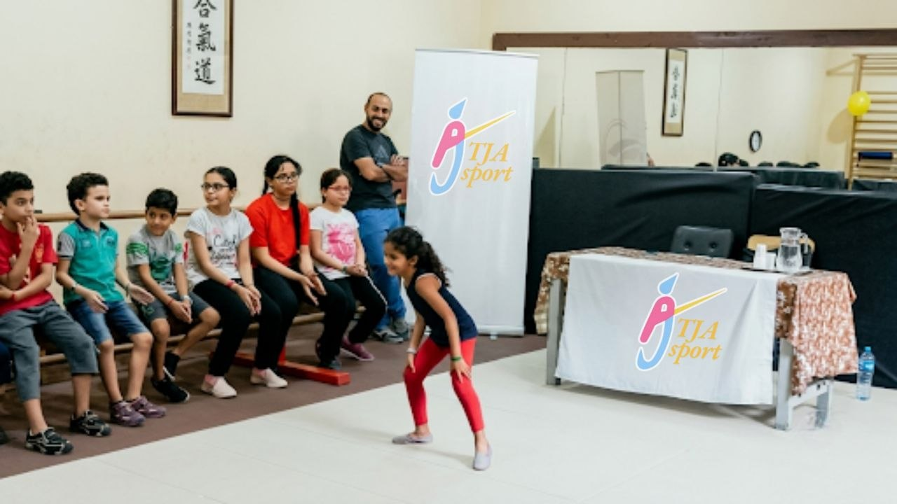
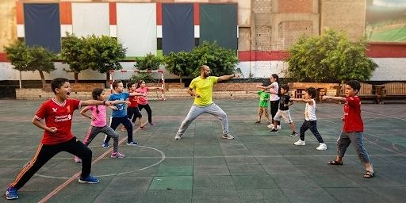
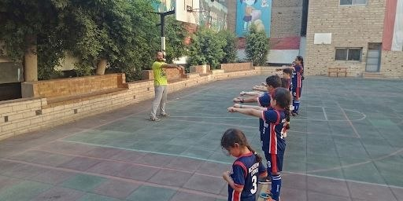
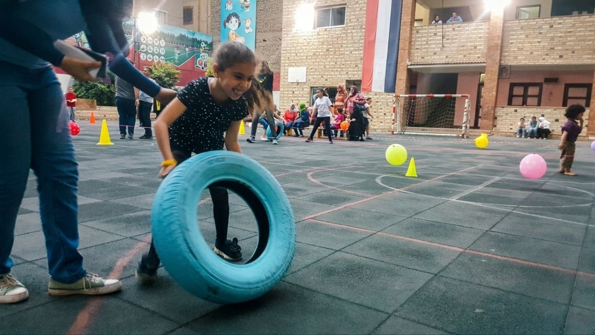
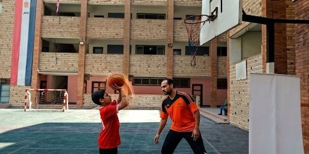

في TJA نساعد طفلك على بناء شخصيته وتعديل سلوكه من الجذور. لا نعاقب وبنصلّح، ولكن بنفهم وبنبني وبنطوّر ليكون طفلك واثقاً من نفسه وقادراً على مواجهة التحديات.
نعتمد منهجيات علمية عالمية تناسب الهوية العربية والتربية السليمة.
مواجهة التحديات السلوكية مع الأطفال هي مرحلة طبيعية، الخطوة الأهم هي التوجيه العلمي السليم.
هل طفلك بيتعصب بسرعة، وبيلاقي صعوبة في التحكم في مشاعره أو التعبير عنها بشكل هادئ؟
مش بيقدر يركز في المذاكرة أو في نشاط معين لفترة كافية، وبيتشتت بسهولة مع المؤثرات الخارجية؟
بيرفض يسمع الكلام وبيعاند لمجرد الرفض، مما يخلق صدامات يومية مستمرة وصعوبة في النقاش.
بيشعر بالخجل الزائد، عنده صعوبة في الدفاع عن نفسه أو اتخاذ قرارات بسيطة وبيهاب التجمعات.
بيواجه تحديات في بناء صداقات مع زملائه، أو في شرح ما يدور بداخله من أفكار ومشاعر للأهل.
بيقضي أغلب وقته خلف شاشات التابلت والتليفون، مع تأثير واضح على نشاطه البدني وحالته النفسية.
"نحن لا نهدف فقط إلى تعديل سلوك الأطفال، بل إلى بناء شخصيات قوية قادرة على مواجهة المستقبل بثقة. في TJA، نؤمن بأن كل طفل يحمل بداخله قائداً ينتظر التوجيه السليم."
نحن نعمل معكم خطوة بخطوة وفق مسار سلوكي علمي يضمن نتائج حقيقية ومستدامة لطفلك.
نبدأ بجلسة استشارية وتقييم سلوكي شامل لنفهم الصورة الكاملة من منظور الأهل والطفل.
نوفر بيئة تفاعلية يتدرب فيها طفلك على المهارات السلوكية دون خوف من النقد أو الأحكام.
تعديل السلوك عبر أنشطة وألعاب تعلّم الطفل التحكم الذاتي وبناء المهارات القيادية والشخصية.
لا نتركك بمفردك؛ نزود الأهل بأدوات تربوية وخطط منزلية لضمان استمرارية التطور الإيجابي.
برامج متخصصة مصممة بعناية لتغطي مختلف الفئات العمرية والاحتياجات السلوكية لوليدكم.
يركز على غرس القيم الأساسية، تنمية الثقة بالنفس، والتدريب على مهارات التفكير وحل المشكلات البسيطة.
مصمم لمرافقة المراهق في هذه المرحلة الانتقالية الصعبة. نركز على مهارات القيادة، مواجهة ضغوط الأقران، وبناء الهوية.
تجربة معايشة مكثفة (أيام صيفية/شتوية) تعتمد على أنشطة التعلم بالتجربة لبناء المهارات السلوكية والاعتماد على الذات.
الفرق بين الأسلوب التقليدي المضغوط والمنهج التربوي المنظم يظهر جلياً في سلوكيات الطفل اليومية وعلاقته بوالديه.
ابدأ رحلة التغييرردود أفعال عنيفة وعصبية، وصعوبة بالغة في التعبير عن الاحتياجات أو سماع الكلام.
قدرة على إدارة مشاعر الغضب، هدوء نسبي، ونقاش عاقل بين الطفل ووالديه.
انعزال مستمر خلف الهواتف، وكسل شديد عن أداء الواجبات أو التفاعل الأسري.
تنظيم أوقات الشاشات، إحساس بالمسؤولية، وحرص على المشاركة في الأنشطة الأسرية والبدنية.
لقطات مميزة من الأنشطة والتدريبات الرياضية والتربوية لأبطالنا أثناء رحلة البناء والقيادة.








قصص حقيقية وتغيرات ملموسة لآباء وأمهات وجدوا في TJA الطريقة المناسبة لفهم أبنائهم.
"ابني كان شديد العصبية وكنت أدخل معه في معارك يومية لم تكن تجلب سوى مزيد من العناد. بعد الانضمام لبرنامج الأطفال والمتابعة الأسبوعية مع المستشار، تعلمت كيف أستمع له، وتغيرت سلوكياته تماماً وأصبح أكثر هدوءاً."
"مرحلة المراهقة مع ابنتي كانت تشعرني بالخوف المستمر لقلة حوارنا. الكامب التربوي التفاعلي كان نقطة التحول؛ رجعت ابنتي واثقة بنفسها وتتحدث معي بصراحة تامة بعد انقطاعها عن الهواتف وتلقيها تدريب قيادي."
"أفضل استثمار قمنا به لأبنائنا. البرامج في TJA عملية وليست مجرد نصائح تربوية نظرية. المتابعة المستمرة للأهل معنا كآباء كانت طوق النجاة لتطبيق التربية الإيجابية الصحيحة في المنزل."
"كنت أعاني من مشكلة الكذب المستمر والخوف عند طفلي، وبعد جلسات التقييم في TJA أدركت أن المشكلة كانت في طريقتي في العقاب. شكراً لفريق الأكاديمية على توجيهي وتعديل سلوك طفلي بشكل جذري وإيجابي."
"كامب TJA الصيفي كان تجربة لا تُنسى لابني. لأول مرة أراه يعتمد على نفسه تماماً وينظم وقته بل وبدأ يعلم إخوته الصغار مهارات القيادة والذكاء العاطفي. تجربة فريدة أنصح بها كل أب وأم حريصين على مستقبل أبنائهم."
سجل بياناتك الآن ليتصل بك أحد مستشارينا التربويين لتنسيق موعد جلسة تقييم مجانية لطفلك وتحديد البرنامج الأنسب له.
tjasport@gmail.com
01034335254